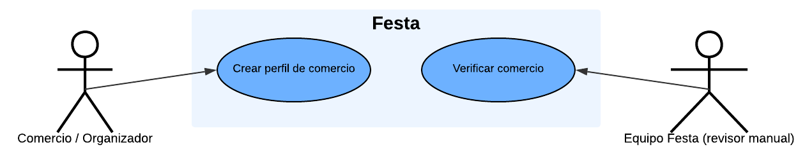
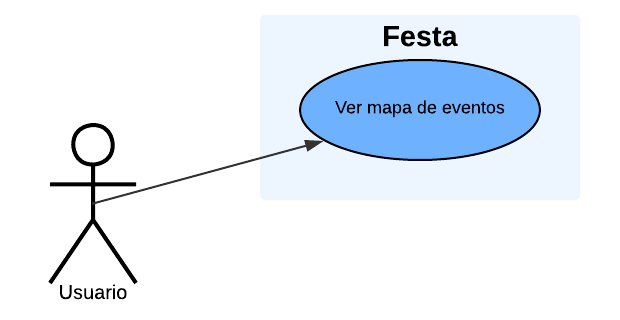
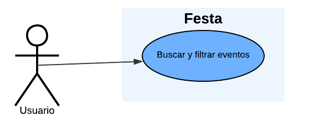
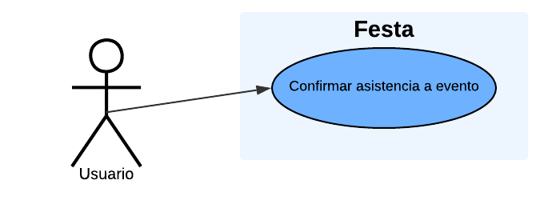
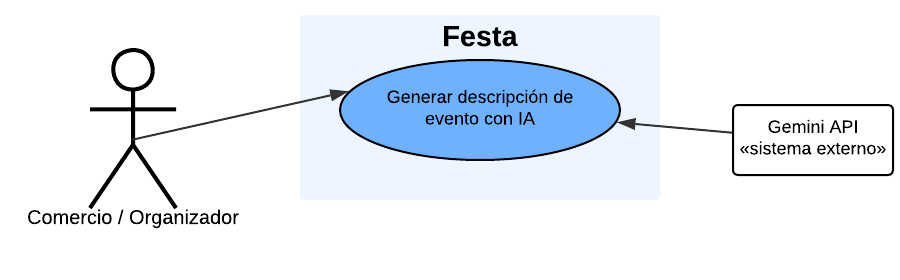
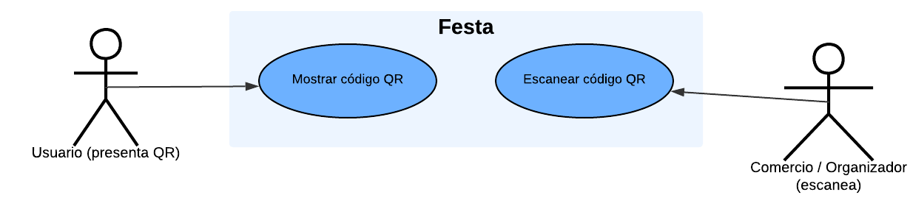
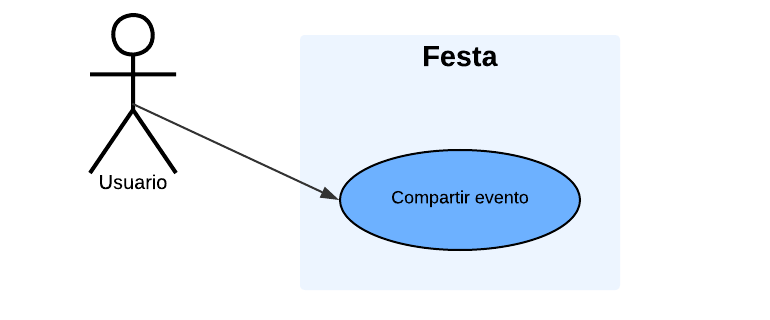
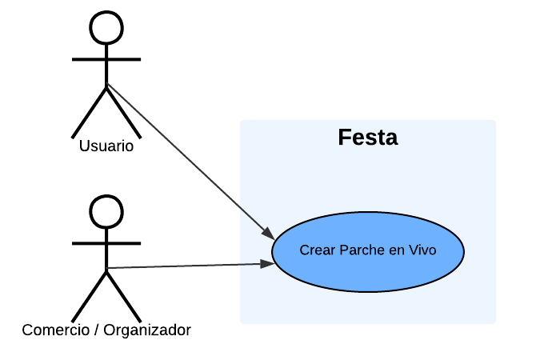

Registro e inicio de sesión
El sistema debe permitir a un usuario o comercio registrarse e iniciar sesión mediante correo electrónico y contraseña. El inicio de sesión con Google (OAuth2) queda como RF-1.1, en versión futura.
Actor: Usuario, Comercio/Organizador
Ver el detalle
Precondiciones
Para que el sistema cumpla con este requerimiento, Festa debe tener previamente el servicio de autenticación (Auth Service) desplegado y disponible.
Poscondiciones
Se espera como resultado que el actor quede autenticado con una sesión válida (JWT) y pueda acceder a las funcionalidades según su rol.
Flujo principal
- El actor abre la app y selecciona "Registrarse" o "Iniciar sesión".
- Para registrarse, el actor consulta el aviso de privacidad y autoriza el tratamiento de sus datos personales conforme a la Ley 1581 de 2012.
- El actor ingresa su correo y contraseña.
- El sistema valida las credenciales.
- El sistema genera un token JWT de sesión.
- El sistema redirige al actor a su pantalla principal.
Diagrama de caso de uso

RF-1.1
Won't
(versión futura)
Inicio de sesión con Google
El sistema debe permitir iniciar sesión con una cuenta de Google (OAuth2). Queda fuera de la versión actual (Won't).
Actor: Usuario, Comercio/Organizador
Ver el detalle
Precondiciones
Para que el sistema cumpla con este requerimiento, Festa debe tener previamente el servicio de autenticación (Auth Service) desplegado y el registro con correo (RF-01).
Poscondiciones
Se espera como resultado que el actor inicie sesión con su cuenta de Google.
Flujo principal
- El actor elige iniciar sesión con Google.
- El sistema valida el token de Google.
- El sistema genera un token JWT de sesión.
Diagrama de caso de uso
No aplica en esta versión.
Perfil de usuario
El sistema debe permitir al usuario configurar y editar un perfil con sus intereses y preferencias de plan (cultural, musical, deportivo, gastronómico).
Actor: Usuario
Ver el detalle
Precondiciones
Para que el sistema cumpla con este requerimiento, Festa debe tener previamente al usuario registrado e identificado (RF-01).
Poscondiciones
Se espera como resultado que el perfil quede actualizado con los intereses del usuario, disponibles para el motor de recomendaciones de IA (RF-08).
Flujo principal
- El actor accede a "Mi perfil".
- El sistema muestra las categorías de interés disponibles.
- El actor selecciona una o varias categorías.
- El sistema persiste las preferencias asociadas al usuario.
Diagrama de caso de uso

Perfil de comercio/organizador
El sistema debe permitir a un comercio u organizador crear un perfil con datos del negocio, ubicación y categoría, sujeto a verificación manual del equipo Festa (piloto en ECI).
Actor: Comercio/Organizador, Equipo Festa (revisor manual)
Ver el detalle
Precondiciones
Para que el sistema cumpla con este requerimiento, Festa debe tener previamente al comercio registrado e identificado (RF-01).
Poscondiciones
Se espera como resultado que el comercio quede con un perfil verificado (o pendiente/rechazado) que determina si puede publicar eventos (RF-04).
Flujo principal
- El actor accede a "Crear perfil de comercio".
- El actor ingresa nombre, ubicación, categoría y descripción del negocio.
- El sistema guarda el perfil con estado "pendiente de verificación".
- El equipo Festa revisa manualmente la solicitud.
- El sistema notifica al actor el resultado (aprobado/rechazado).
Diagrama de caso de uso

Gestión de eventos (crear, editar, cancelar)
El sistema debe permitir a usuarios y comercios crear, editar y cancelar eventos, especificando fecha, lugar, categoría, cupo y descripción.
Actor: Usuario, Comercio/Organizador
Ver el detalle
Precondiciones
Para que el sistema cumpla con este requerimiento, Festa debe tener previamente al actor identificado y, si es comercio, con perfil verificado (RF-03).
Poscondiciones
Se espera como resultado que el evento quede creado, actualizado o cancelado, y visible (o no) en el mapa según corresponda.
Flujo principal
- El actor selecciona "Crear evento".
- El actor ingresa título, fecha/hora, lugar, categoría, cupo y descripción (opcionalmente generada por IA, RF-09).
- El sistema valida los datos obligatorios.
- El sistema guarda el evento y lo publica en el mapa (RF-05).
Diagrama de caso de uso

Mapa interactivo de eventos
El sistema debe mostrar en un mapa interactivo los eventos activos y próximos, agrupados en clústeres por zona, cargando lo visible en menos de 2 segundos (RNF1). En el MVP el mapa se actualiza al abrirse y al moverse; no es en tiempo real (sin WebSockets).
Actor: Usuario
Ver el detalle
Precondiciones
Para que el sistema cumpla con este requerimiento, Festa debe tener previamente al usuario identificado y haber solicitado su consentimiento explícito antes de acceder a la ubicación del dispositivo (RNF5).
Poscondiciones
Se espera como resultado que el actor visualice los eventos activos y próximos cercanos, organizados por clústeres, en menos de 2 segundos.
Flujo principal
- El actor abre la pantalla principal (mapa).
- Si el actor consiente, el sistema obtiene la ubicación del dispositivo; si la rechaza o no está disponible, informa y usa la ubicación predeterminada del piloto ECI.
- El sistema consulta los eventos activos/próximos cercanos.
- El sistema agrupa eventos cercanos en clústeres y los renderiza.
- El actor puede hacer zoom/pan; el sistema recalcula clústeres.
Diagrama de caso de uso

RF-06
Should
alcance reducido
Búsqueda y filtrado de eventos
El sistema debe permitir al usuario buscar y filtrar eventos por categoría, zona y fecha (alcance MVP reducido, sin ordenamiento por popularidad).
Actor: Usuario
Ver el detalle
Precondiciones
Para que el sistema cumpla con este requerimiento, Festa debe tener previamente al actor en la pantalla del mapa o listado de eventos (RF-05).
Poscondiciones
Se espera como resultado que el actor visualice únicamente los eventos que cumplen los criterios seleccionados.
Flujo principal
- El actor abre el panel de filtros/búsqueda.
- El actor ingresa texto libre y/o selecciona categoría, zona, rango de fechas.
- El sistema consulta los eventos que cumplen los criterios.
- El sistema actualiza el mapa/listado con los resultados filtrados.
Diagrama de caso de uso

RF-07
Should
alcance reducido
Confirmación de asistencia
El sistema debe permitir a un usuario confirmar su asistencia a un evento y mostrar un conteo de asistentes confirmados (alcance MVP reducido, sin actualización en vivo por WebSockets).
Actor: Usuario
Ver el detalle
Precondiciones
Para que el sistema cumpla con este requerimiento, Festa debe tener previamente al actor identificado y visualizando el detalle de un evento (RF-05).
Poscondiciones
Se espera como resultado que el actor quede registrado como asistente confirmado y el conteo público se actualice.
Flujo principal
- El actor abre el detalle de un evento.
- El actor selecciona "Confirmar asistencia".
- El sistema registra la confirmación asociada al actor y al evento.
- El sistema actualiza el conteo de asistentes visible.
Diagrama de caso de uso

RF-08
Must
requerimiento del profesor
Recomendaciones personalizadas por IA Generativa
El sistema debe generar recomendaciones de eventos en lenguaje natural, conversando con el usuario sobre sus intereses del momento, en vez de mostrar solo una lista filtrada. Requerimiento explícito del profesor.
Actor: Usuario
Ver el detalle
Precondiciones
Para que el sistema cumpla con este requerimiento, Festa debe tener previamente al actor identificado, idealmente con intereses configurados (RF-02).
Poscondiciones
Se espera como resultado que el actor reciba una recomendación personalizada en lenguaje natural, con eventos concretos que puede explorar o confirmar.
Flujo principal
- El actor escribe qué tipo de plan busca.
- El sistema envía el mensaje, los intereses del actor y los eventos disponibles al modelo de IA Generativa.
- El modelo genera una respuesta conversacional recomendando eventos específicos.
- El sistema muestra la respuesta con enlaces directos a los eventos recomendados.
- El actor puede seguir conversando para refinar la recomendación.
Diagrama de caso de uso

RF-09
Must
requerimiento del profesor
Descripción de evento generada por IA
El sistema debe generar automáticamente, a partir de datos básicos ingresados por el comercio, una descripción atractiva del evento redactada por IA Generativa. Requerimiento explícito del profesor.
Actor: Comercio/Organizador
Ver el detalle
Precondiciones
Para que el sistema cumpla con este requerimiento, Festa debe tener previamente al comercio creando un evento con los datos básicos ya ingresados (RF-04).
Poscondiciones
Se espera como resultado que el evento quede con una descripción atractiva generada (o editada) por IA, lista para publicarse.
Flujo principal
- El actor ingresa nombre, ubicación y tipo de actividad del evento.
- El actor selecciona "Generar descripción con IA".
- El sistema envía los datos básicos al modelo de IA Generativa.
- El modelo genera una descripción atractiva.
- El sistema muestra la descripción para revisión del actor.
- El actor acepta o edita la descripción.
- El sistema persiste la descripción final (no se regenera en visualizaciones futuras).
Diagrama de caso de uso

RF-10
Must
indicación del profesor
Validación de asistencia por QR
El sistema debe generar un código QR único por asistente para eventos gratuitos confirmados y por boleto comprado para eventos pagos. El QR es de un solo uso (RNF7) y se escanea al ingreso para validar la asistencia. Indicación explícita del profesor.
Actor: Usuario (presenta el QR), Comercio/Organizador (escanea el QR)
Ver el detalle
Precondiciones
Para que el sistema cumpla con este requerimiento, Festa debe tener previamente al actor con una confirmación de asistencia o boleto para el evento (RF-07 o RF-11).
Poscondiciones
Se espera como resultado que el check-in quede registrado de forma única e irrepetible.
Flujo principal
- El sistema genera un código QR único cuando el usuario confirma asistencia a un evento gratuito (RF-07) o cuando se completa la compra de una entrada para un evento pago (RF-11).
- El actor presenta el QR al ingreso del evento.
- El comercio escanea el QR con la app.
- El sistema valida que el QR sea auténtico, corresponda al evento y no haya sido usado antes.
- El sistema marca el QR como usado y registra el check-in.
Diagrama de caso de uso

RF-11
Must
indicación del profesor
Venta de boletería
El sistema debe permitir vender boletería dentro de la app para eventos que lo requieran, a través de Wompi. La comisión de la pasarela la descuenta Wompi del pago que recibe el comercio; el comprador paga solo el precio de la boleta. Indicación explícita del profesor.
Actor: Usuario (comprador)
Ver el detalle
Precondiciones
Para que el sistema cumpla con este requerimiento, Festa debe tener previamente al actor identificado y un evento de pago con cupo disponible.
Poscondiciones
Se espera como resultado que el actor quede con un boleto válido (con QR) y el organizador reciba el valor neto de la venta.
Flujo principal
- El actor abre el detalle de un evento de pago y selecciona "Comprar entrada".
- El sistema inicia el pago con Wompi por el precio de la boleta.
- El actor completa el pago.
- Wompi confirma el pago al sistema.
- El sistema liquida al organizador el valor neto, descontada la comisión de la pasarela.
- El sistema genera el boleto con su QR (RF-10) y descuenta el cupo.
Diagrama de caso de uso

RF-12
Should
fase 2; fuera del MVP actual
Notificaciones push
Fase 2 (fuera del MVP actual): el sistema enviará notificaciones push al usuario sobre eventos cercanos relevantes y recordatorios de asistencia a eventos confirmados con entrega a dispositivos iOS y Android (Firebase Cloud Messaging y APNs).
Actor: Usuario
Ver el detalle
Precondiciones
Para que el sistema cumpla con este requerimiento, Festa debe tener previamente al actor identificado y con permiso de notificaciones otorgado en el dispositivo.
Poscondiciones
Se espera como resultado que el actor reciba oportunamente notificaciones sobre eventos relevantes cercanos y recordatorios de eventos confirmados.
Flujo principal
- Ocurre un evento relevante en el sistema (evento nuevo cercano, o recordatorio de un evento confirmado).
- El sistema encola la notificación correspondiente.
- El sistema envía el push al dispositivo del actor vía Firebase Cloud Messaging (Android) o APNs (iOS).
- El actor recibe la notificación y puede tocarla para ir al detalle del evento.
Diagrama de caso de uso

Compartir eventos en redes sociales
El sistema debe permitir compartir eventos mediante enlaces hacia redes sociales externas, usando el mecanismo nativo de compartir del sistema operativo.
Actor: Usuario
Ver el detalle
Precondiciones
Para que el sistema cumpla con este requerimiento, Festa debe tener previamente el evento publicado y visible (RF-04).
Poscondiciones
Se espera como resultado que se genere y envíe un enlace público al evento hacia el destino elegido por el actor.
Flujo principal
- El actor abre el detalle de un evento.
- El actor selecciona "Compartir".
- El sistema invoca el mecanismo nativo de compartir del sistema operativo con un enlace al evento.
- El actor elige el destino (red social, chat, etc.) y envía.
Diagrama de caso de uso

Reporte de eventos o usuarios
El sistema debe permitir reportar eventos o usuarios; para el piloto en ECI, la moderación es una revisión manual del equipo (no automatizada).
Actor: Usuario, Equipo Festa (revisor manual)
Ver el detalle
Precondiciones
Para que el sistema cumpla con este requerimiento, Festa debe tener previamente al actor identificado y visualizando el evento o usuario a reportar.
Poscondiciones
Se espera como resultado que el reporte quede registrado y, si aplica, se tome una acción de moderación sobre el evento o usuario reportado.
Flujo principal
- El actor selecciona "Reportar" sobre un evento o usuario.
- El actor indica el motivo del reporte.
- El sistema registra el reporte y lo pone en cola de revisión.
- El equipo Festa revisa manualmente el reporte y toma una acción (advertencia, retiro del contenido, ninguna acción).
Diagrama de caso de uso

Panel de comercio
El sistema debe mostrar al comercio un panel simple para medir retorno (conteos de asistentes y boletos vendidos), sin ser un dashboard completo con gráficas en el MVP.
Actor: Comercio/Organizador
Ver el detalle
Precondiciones
Para que el sistema cumpla con este requerimiento, Festa debe tener previamente al comercio identificado y con al menos un evento publicado.
Poscondiciones
Se espera como resultado que el comercio pueda ver el retorno (asistencia y ventas) atribuible a sus eventos publicados.
Flujo principal
- El actor accede a "Mi panel".
- El sistema consulta los eventos del comercio y sus métricas (asistentes confirmados, boletos vendidos).
- El sistema muestra los conteos por evento.
Diagrama de caso de uso

RF-16
Won't
/ roadmap futuro
Otorgamiento de XP (roadmap futuro)
El sistema debe otorgar XP por asistir, crear y promocionar eventos, según reglas configurables. Fuera del alcance del MVP de este semestre (Won't).
Actor: Usuario
Ver el detalle
Precondiciones
Para que el sistema cumpla con este requerimiento, Festa debe tener previamente definido un sistema de reglas de puntuación configurable.
Poscondiciones
Se espera como resultado que el actor acumule XP visible en su perfil, según las reglas vigentes.
Flujo principal
- El actor realiza una acción elegible (asistir, crear o promocionar un evento).
- El sistema evalúa la acción contra las reglas configurables.
- El sistema otorga la XP correspondiente al actor.
Diagrama de caso de uso

RF-17
Won't
/ roadmap futuro
Canje de puntos por descuentos (roadmap futuro)
El sistema debe permitir el canje de puntos por descuentos en comercios aliados, con generación y redención de cupones. Fuera del alcance del MVP de este semestre (Won't).
Actor: Usuario, Comercio aliado
Ver el detalle
Precondiciones
Para que el sistema cumpla con este requerimiento, Festa debe tener previamente al actor con puntos acumulados (RF-16) y comercios aliados configurados.
Poscondiciones
Se espera como resultado que el actor obtenga un cupón válido y sus puntos se descuenten en consecuencia.
Flujo principal
- El actor selecciona un descuento disponible para canjear.
- El sistema valida que el actor tenga puntos suficientes.
- El sistema genera un cupón y descuenta los puntos.
- El actor redime el cupón en el comercio aliado.
Diagrama de caso de uso

RF-18
Won't
/ roadmap futuro
Sistema de reputación (roadmap futuro)
El sistema debe mantener un sistema de reputación para creadores de eventos: ranking, insignias y mayor visibilidad en el mapa. Fuera del alcance del MVP de este semestre (Won't).
Actor: Comercio/Organizador
Ver el detalle
Precondiciones
Para que el sistema cumpla con este requerimiento, Festa debe tener previamente un historial de eventos creados y su desempeño (asistencia, calificaciones).
Poscondiciones
Se espera como resultado que los organizadores con mejor desempeño obtengan mayor visibilidad e insignias visibles en su perfil.
Flujo principal
- El sistema calcula la reputación del actor a partir de su historial de eventos.
- El sistema asigna insignias y posición en el ranking según reglas definidas.
- El sistema aumenta la visibilidad en el mapa de los actores con mejor reputación.
Diagrama de caso de uso

Parches en Vivo
El sistema debe permitir crear eventos improvisados ("Parches en Vivo") que se activan en menos de 2 horas y expiran automáticamente.
Actor: Usuario, Comercio/Organizador
Ver el detalle
Precondiciones
Para que el sistema cumpla con este requerimiento, Festa debe tener previamente al actor identificado.
Poscondiciones
Se espera como resultado que el parche quede visible en el mapa mientras esté vigente, y desaparezca automáticamente al expirar.
Flujo principal
- El actor crea un "Parche en Vivo" indicando lugar, hora de inicio (dentro de las próximas 2 horas) y descripción breve.
- El sistema publica el evento inmediatamente en el mapa, marcado como "en vivo".
- El sistema expira automáticamente el evento al cumplirse su ventana de tiempo.
Diagrama de caso de uso
